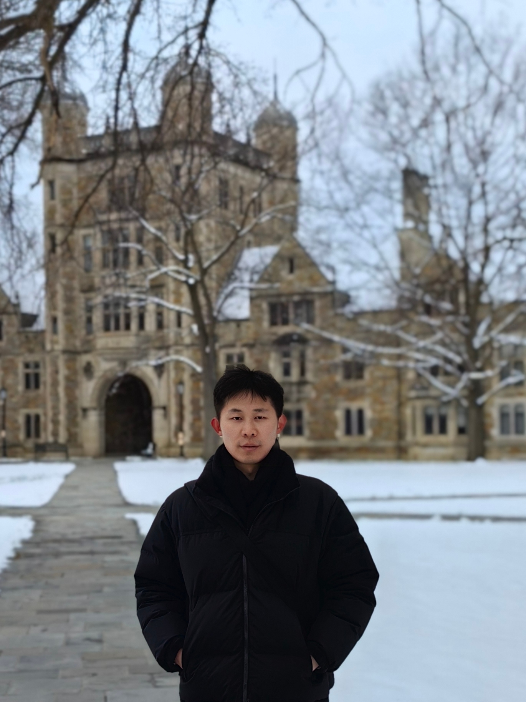

Jian Wang (王健)Research Professor
College of Computer Science, |
 |
I am a Research Professor and a PhD supervisor at the College of Computer Science, Sichuan University. Before that, I was a Postdoctoral Fellow at PolyU NLP Group. I obtained my PhD degree from Department of Computing, The Hong Kong Polytechnic University in 2024, supervised by Prof. Maggie Wenjie Li. During the spring and summer of 2024, I visited the SLED Lab at University of Michigan, where I was honored to work with Prof. Joyce Chai. During my graduate studies, I was fortunate to visit SIAT, Chinese Academy of Sciences and work with Prof. Min Yang. I obtained MSc and BEng degrees from School of Computer Science and Engineering, South China University of Technology.
My research interests are in natural language processing (NLP), large language models (LLMs), and AI for Science more broadly. Recently, I have been focusing on the following directions:
👉 I am actively recruiting highly motivated PhD / Master / undergraduate students / research assistants to join our group! If you are interested, please do not hesitate to send me your CV and a brief self-introduction by email.
[Apr. 2026] 🔥 We got four papers accepted by ACL 2026! Congratulations to Dongding, Jiashuo, Chak Tou, and Hanlin! Preprints and code will be released soon.
[Apr. 2026] 🔥 I gave an invited talk on "AI Agents and Their Applications in Biomedicine" at SCU State Key Laboratory of Biotherapy.
[Dec. 2025] I gave an invited talk on "Stepwise Verification in LLM Agents: Planning, Tutoring, and Test-time Scaling" at SUSTech, Shenzhen.
[Nov. 2025] I will be heading to Suzhou for EMNLP 2025. Welcome to have a chat!
[Jun. 2025] Our ACL paper was selected as an oral presentation (Top 8%)! Congrats to Chak Tou Leong!
[May. 2025] We got three papers accepted by ACL 2025! Welcome to have a chat in Vienna.